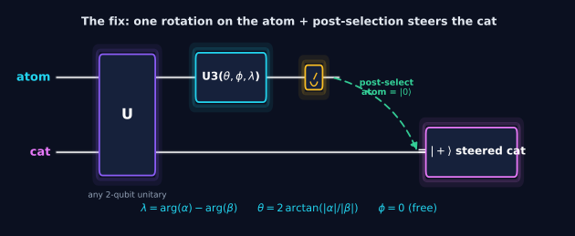

Qubit
A system with two labeled measurement outcomes, |0⟩ and |1⟩. Before measurement, its state can carry an amplitude for each outcome.
A 5–8 minute, zero-prerequisite OER
A validator can print PASS even when its “successful” measurement branch never occurs. Learn the two numbers that separate a correct equation from a physically reachable quantum state.

First: what is this challenge about?
Schrödinger's thought experiment places a radioactive atom, a mechanism, and a cat in a closed box. The coding challenge replaces the real objects with two labeled quantum bits so we can study their joint state.
The first symbol in a two-qubit label describes the atom.
The second symbol describes the simplified “cat” system.

The original repository's state-evolution animation: prepare → entangle → rotate the atom's measurement basis → post-select.
The popular claim says the unmeasured cat is already in the pure state |+⟩. The challenge begins by correcting that claim: when the atom and cat are entangled, the cat alone looks like a classical 50/50 mixture, with no usable phase coherence.

Center of the sphere: mixed state. Surface of the sphere: pure superposition. Measuring the atom in a suitable basis can steer the cat from the first description to the second.
Two views of the same change: the Bloch animation shows where the cat state moves geometrically; the density matrix shows which numerical entries change when quantum coherence is restored.

Geometry: the unconditioned cat begins at the Bloch-sphere center. Conditioning on the chosen atom measurement outcome steers it to the surface at |+⟩.

Numbers: the diagonal bars encode populations; the off-diagonal bars encode coherence. Steering creates the off-diagonal terms required for a genuine |+⟩ superposition.
A small concept kit
Each term below has one job in this experiment. You do not need a full quantum-computing course before continuing.
A system with two labeled measurement outcomes, |0⟩ and |1⟩. Before measurement, its state can carry an amplitude for each outcome.
A complex number attached to a possibility. Its squared magnitude gives probability; its phase controls how possibilities interfere.
A coherent combination such as |+⟩ = (|0⟩ + |1⟩)/√2. “Coherent” means the relative phase is still present—not merely an unknown coin flip.
A joint state whose parts cannot each be assigned an independent pure state. The correlations belong to the combined system.
The “direction” in which we ask a 0/1 question. A U3 gate acts like a three-knob compass that rotates this direction before measurement.
Repeat the experiment and keep only rounds with a predeclared outcome. Here the challenge calls atom = 0 the successful exit.
The target cat state
“Target” means the state chosen in advance by the protocol—not a unique state that nature automatically prefers. Equal magnitude gives equal measurement probabilities; equal phase makes this specifically the |+⟩ state.
The original coding task
Given a two-qubit operation U, find U3 angles θ, φ, and ω so that—when the atom is measured as 0—the cat is in the uniform target state |+⟩.

A known Bell-state preparation followed by a rotated atom measurement.

Replace the known preparation with arbitrary U and solve for the U3 angles.
No law of physics makes 0 the only valid choice. It is the challenge's declared success label after the U3 rotation. Another protocol could keep 1, or apply a correction after seeing 1. The important rule is to declare the branch and report how often it occurs.
Post-selecting atom = 0 keeps the first two terms: A₀₀|00⟩ + A₀₁|01⟩. The original validator checks whether the two surviving amplitudes are approximately equal. That checks the shape of the desired branch—but not whether the branch exists.
Two checks, in the right order
A physically meaningful claim needs both success probability and conditional state quality.
Squared amplitude magnitude is probability. If p₀ = 0, no number of repetitions will produce the branch we planned to keep.
Fidelity F compares the normalized cat state in that branch with the target. F = 1 is a perfect match. When p₀ = 0, cat₀ cannot be normalized, so F is undefined—not zero.
In ideal mathematics, require p₀ > 0. Numerical code uses a small tolerance such as ε = 10⁻¹².
The zero-equals-zero loophole: A₀₀ = A₀₁ = 0 satisfies the equality test, yet p₀ = |0|² + |0|² = 0. It is like confirming that two empty cups contain equal amounts and then claiming the drinks were prepared.
Dividing by √p₀ makes the conditional state have total probability 1. When p₀ = 0, this would divide by zero; there is no physical conditional state to compare with |+⟩.
Interactive counterexample lab
Switch between the two fixed experiments. Watch the target branch—not only the validator badge.
Reachable target
The joint state is entangled. The chosen atom-0 branch occurs half the time and leaves the cat exactly in |+⟩.
Equality is non-zero: A₀₀ = A₀₁ = 0.5. Therefore p₀ = 0.25 + 0.25 = 0.5, and the normalized conditional cat state is |+⟩.
CNOT is capable of creating entanglement for some inputs, but capability is not the same as what happens to this input: CNOT|00⟩ = |00⟩. The solver can rotate the atom so the checked atom-0 amplitudes become A₀₀ = A₀₁ = 0. The equality test passes, but the selected branch has probability zero.
One-question understanding check
Choose an answer.
The whole lesson in one sentence
Passing an amplitude-equality test does not by itself prove that a post-selected quantum state can be prepared. Check that the branch occurs, then check the state inside it.